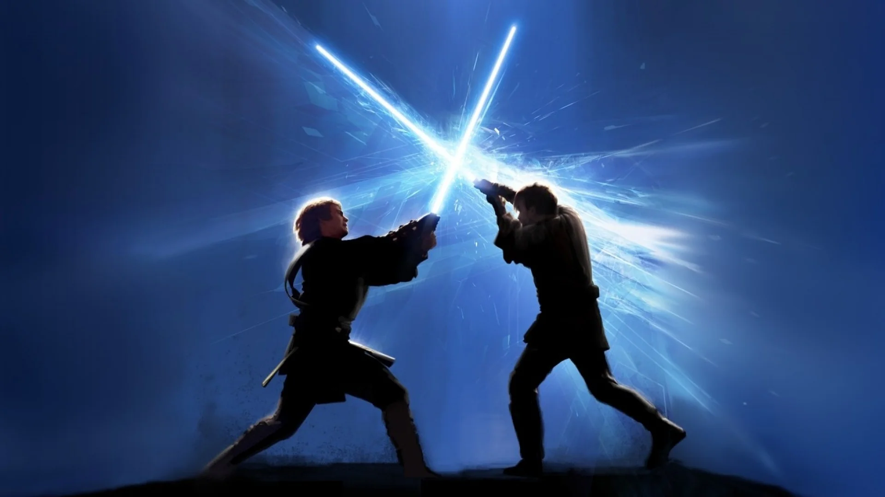

Combat is arguably the most important part of Dungeons and Dragons. It has the most rules dedicated to it, it was the only way people were able to level up until 2014, and everyone expects it to happen when you play this game, regardless of party dynamics.
Unlike most of this guide, combat is something that very seamlessly translates from being a player to being a DM. I would even argue that it's a necessity. Otherwise, you get people trying to homebrew the living daylights out of combat, because they don't know how to play normally.
| Level 2 | Level 3 | Level 4 | Level 5 | Level 6 | |
|---|---|---|---|---|---|
| 3 Party Memebers | CR 1 | CR 2 | CR 3 | CR 4 | CR 5 |
| 4 Party Memebers | CR 2 | CR 3 | CR 3 | CR 5 | CR 6 |
| 5 Party Memebers | CR 3 | CR 3 | CR 4 | CR 5 | CR 6 |
| 6 Party Memebers | CR 3 | CR 4 | CR 5 | CR 6 | CR 7 |
| 7 Party Memebers | CR 4 | CR 4 | CR 5 | CR 7 | CR 8 |
Despite this, combat remains one of the hardest things in the game for a Dungeon Master to Master. To the right is a grid I drew out that reflects my own experiences with balancing boss fights. Keep in mind that this does not take magic items into account, 2024 edition, multiple enemies, or player skill.
One last crucial bit of wisdom. In the words of Tommy West, "Don't pull your punches". Your players can tell, and it ruins the game. Once you've picked the enemies, play them. Don't buff them to the moon and back to make it a scary fight, but CERTAINLY don't take away the stakes of the story in your party's favor. If they die, then they die. Let the blood of your players soak your hands. Believe me when I say that they will thank you for it.